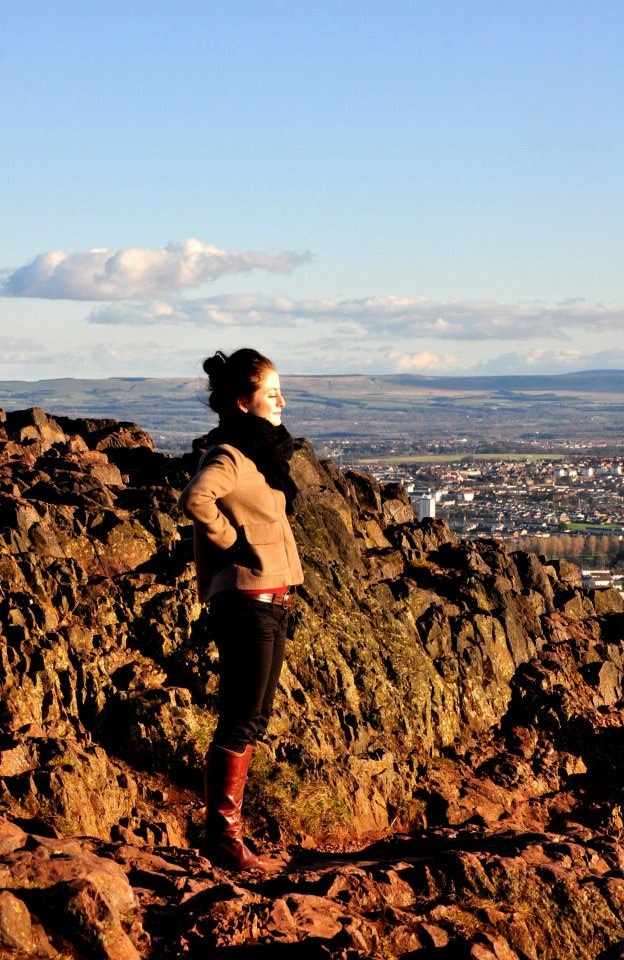
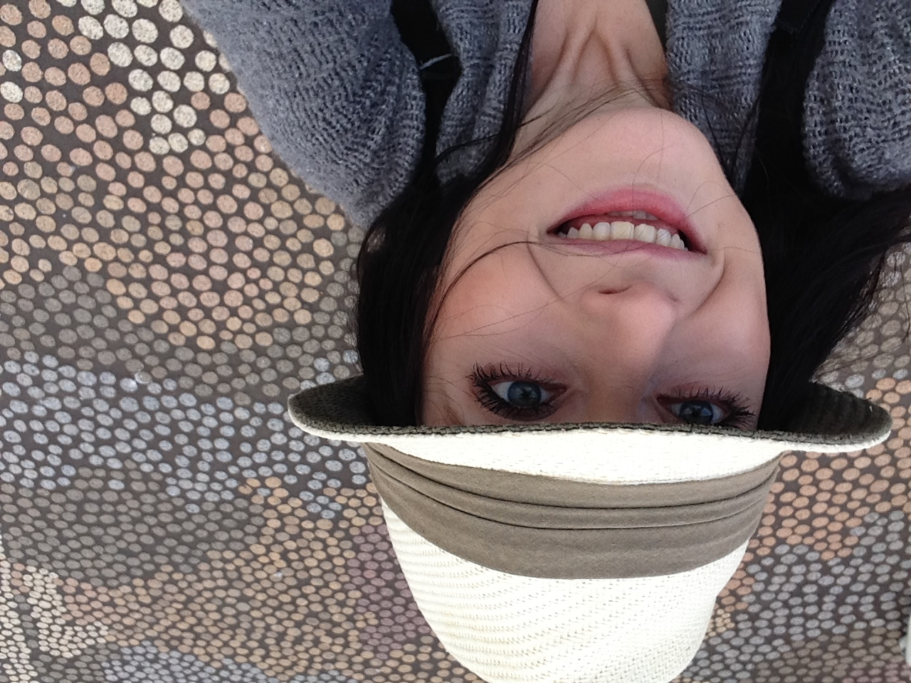
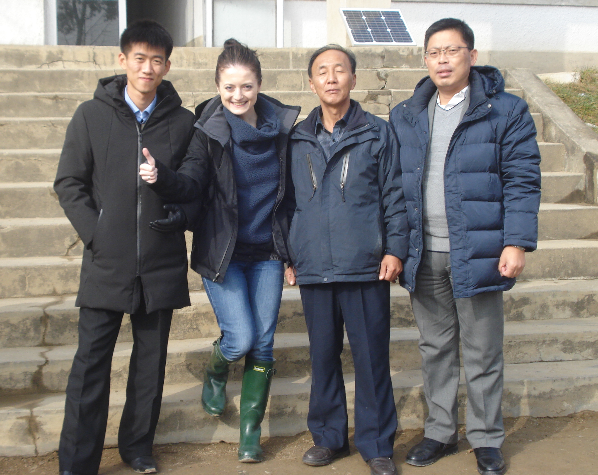
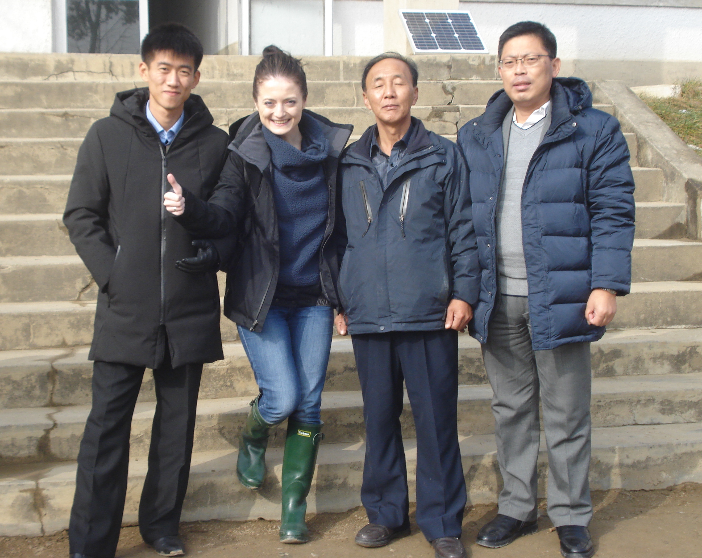

About Me



I am a curious, open-minded, and adventure seeking individual with a strong academic background in science, and public health and +10 years of international professional experience in academia, business analytics, healthcare, research, and technology. For instance, I have graduated in a M.Sc. in Biology from Jagiellonian University in 2008 and M.Sc. in Global Health Science from the University of Oxford in 2010, conducted primary research in both developed and developing countries, e.g. Belgium and Bangladesh, and lived and worked in 7 countries over the last 15 years, e.g. the NHS in the UK, SCHN in Australia, and WHO in Switzerland.


I am also a passionate marathon runner, traveller, and humanitarian worker. For instance, I have completed 15 full marathons in 10 different countries so far, and engaged with and/or volunteered for several organisations in and outside the Democratic People’s Republic of Korea (DPRK) since 2010, such as DULA International in the UK, Korean Red Cross Federation (KRCF) in the DPRK, and Together-Hamhung in Germany, etc. focusing predominantly on a delivery of medical assistance to children with vision and hearing impairment, and educational materials to medical workforce in North Korea.



